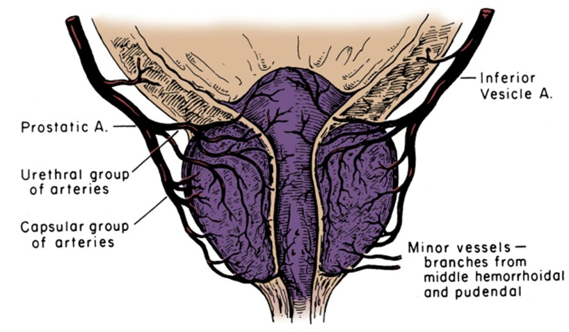

Les antibiotiques et le massage rectal ne sont plus nécessaires !
Les scientifiques suisses ont fait une avancée décisive au traitement de la prostatite chronique. Maintenant, chaque homme peut soulager l’inflammation de la prostate chez soi en 7 jours !
La prostate est le « deuxième cœur » d’un homme. Malheureusement, en raison de facteurs négatifs et après 40 ans, la prostate s’enflamme et grossit. D’une manière ou d’une autre, selon les statistiques de l’Institut européen de la santé, la prostatite bactérienne ou non infectieuse est présente chez 9 hommes sur 10.
Malgré une pathologie aussi répandue, il n’existe toujours pas de traitement adéquat et rapide. Les médicaments et la physiothérapie disponibles ont été mis au point il y a 50 à 60 ans. Malheureusement, ils ne sont pas seulement nocifs (puisque le traitement repose sur des antibiotiques puissants), mais ils sont également inefficaces. Souvent (dans plus de 93 % des cas), la prostatite réapparaît après le traitement. Pour cette raison, de nombreux médecins affirment que la prostatite chronique est incurable.
Cependant, des scientifiques suisses ont trouvé un remède pour améliorer la prostate et éliminer TOTALEMENT la prostatite ! Il est à noter que ce remède était encore utilisé par nos ancêtres. Les scientifiques ne l’ont qu’amélioré. Avec celui-là, vous pouvez guérir la prostatite à tout moment et même si elle a déjà conduit à un adénome.
Lors d’une réunion de presse, le célèbre professeur Brian Atkins, urologue, andrologue, médecin de la plus haute catégorie ayant plus de 30 ans d’expérience, a commenté la découverte de scientifiques suisses

Journaliste : M. Atkins, pourriez-vous expliquer, quel est le danger de la prostatite ? Est-il nécessaire de la soigner ?
Brian Atkins: la prostatite doit être traitée. La prostate, affectée par cette pathologie, est un organe extrêmement important. La santé masculine dépend pour beaucoup de l’état de la prostate. La prostate remplit plusieurs fonctions vitales : produit une sécrétion prostatique, contrôle l’écoulement de l’urine, empêche la pénétration de l’infection de l’urètre dans les voies excréto-urinaires supérieures, produit la prostaglandine E et régule l’état psycho-émotionnel masculin. Et par conséquent, les problèmes avec cet organe entraînent le développement de nombreuses pathologies : impuissance, inflammation des reins et de la vessie, diminution de l’immunité, diminution de la production de testostérone et, par conséquent, vieillissement rapide du corps, maladies cardiovasculaires et dépression.
En l’absence de traitement, même en cas de la prostatite chronique, c’est-à-dire en l’absence de symptômes aigus, des modifications pathologiques de la prostate se produisent, causant toujours l’adénome et, par la suite, le cancer de la prostate. À quel moment cela se produit, ce n’est qu’une question de temps. Dans certains cas, la dégénérescence pathologique du tissu prostatique se produit rapidement, dans d’autres, lentement.
En outre, la prostatite a la tendance à s’aggraver. À chaque exacerbation, les symptômes ne feront que devenir plus forts. Quels sont ces symptômes : inflammation de la prostate, difficulté à uriner, douleurs testiculaires et lombaires, brûlure et douleur lors de la miction, aller souvent aux toilettes.
La prostatite n’est pas une maladie inoffensive. En négligeant le traitement, l’homme abrège sa vie, tout simplement. La maladie doit être traitée le plus tôt possible.
Journaliste : Pourquoi les méthodes de traitement traditionnelles donnent-elles un faible effet thérapeutique ?
Brian Atkins: la prostatite est une maladie extrêmement insidieuse et extrêmement persistante. C’est ainsi que les médecins pensaient jusqu’à maintenant. Cela est dû au fait que les médicaments disponibles actuellement ne permettaient pas de guérir la prostate. Développés il y a plusieurs décennies, 90 % des médicaments ont pour seul but d’éliminer les symptômes de la maladie, sans éliminer leurs causes.
Autrement dit, ils visent à soulager l’inflammation de la prostate afin de faciliter la miction et de supprimer la douleur, ainsi que de lutter contre la microflore pathogène formée lors de la sécrétion de la prostate. Effectivement, cela aide pendant un moment. Cependant, il est très difficile de tuer toutes les bactéries, jusqu’à la dernière. Certaines d’entre elles restent toujours. Par conséquent, dans 93 % des cas la prostatite réapparaît un an après le traitement.
il faut des antibiotiques puissants pour tuer toute microflore pathogène, mais pour que cela fonctionne, il est nécessaire d’éliminer l’agent pathogène même de la prostate. À cette fin, le massage rectal est prescrit, si mal aimé par de nombreux hommes.
C’est en raison de la complexité du traitement que beaucoup de personnes acceptent tous les inconvénients que la pathologie apporte à leur vie. Mais c’est faux et, comme je l’ai déjà dit, c’est dangereux. La nouvelle méthode vous permet de traiter la prostatite sans massage rectal et sans recours aux antibiotiques, ce qui fait son énorme avantage. Elle peut être utilisée par vous-même, chez vous.
Journaliste : Pourriez-vous nous détailler en quoi consiste la découverte des scientifiques suisses ?
Brian Atkins : Ils ont découvert le remède pour éliminer non seulement les symptômes de la prostatite, mais surtout ses causes. Je vais essayer d’expliquer simplement. Voyez pourquoi la prostatite se produit. Pourquoi les cas de son apparition chez les jeunes sont-ils uniques, et presque tout le monde l’a, d’une manière ou d’une autre, parmi les personnes de plus de 40 ans.
En fait, cela est connu depuis longtemps. La cause de la stagnation et du développement de bactéries consiste en détérioration de la circulation sanguine de prostate. En effet, cet organe est littéralement entouré par un réseau de petits capillaires. Ces capillaires deviennent bouchés avec l’âge, par le cholestérol, le réseau capillaire s’appauvrit. En conséquence, la circulation sanguine et la trophie de la prostate s’aggravent. Cet organe est très sensible à cela, car il remplit de nombreuses fonctions différentes et nécessite une grande quantité de nutriments. En conséquence, la prostate commence à malfonctionner en raison de la circulation sanguine insuffisante, ce qui conduit à la stagnation. De plus, l’immunité de la glande diminue et elle cesse de lutter contre les microorganismes pathogènes qui multiplient d’avalanche.
Le système développé de la circulation sanguine de la prostate
Quel est le mérite des scientifiques suisses ? Ils ont trouvé un remède pour améliorer le réseau capillaire de la prostate et de rétablir la circulation sanguine normale de la prostate. Les scientifiques ont découvert que les dépôts de cholestérol en cette partie des vaisseaux détruisent bien les acides gras oméga insaturés (Oméga-3, Oméga-6, Oméga-9) dans un rapport de 1 : 3 : 10. En outre, les scientifiques ont trouvé une plante dans laquelle ces acides sont dans le bon rapport. Il s’est avéré que c’était une plante comme le , ou plutôt pas la plante elle-même, mais ses graines. En fait, les graines de sont le seul produit naturel comportant le bon rapport des acides gras oméga insaturés.
Les scientifiques ont obtenu une huile hautement concentrée à partir de graines de et ont mené des essais cliniques à l’Institut d’urologie de Genève. Au total, environ 500 volontaires souffrant de la prostatite chronique y ont participé. Je veux vous montrer leurs résultats, ils sont tout simplement incroyables !
Résultats de tests:
- La cure complète de la prostatite chez 96 % des sujets testés
- L’inflammation a diminué, la miction est revenue à la normale chez 100 % des sujets testés
- L'augmentation du taux de testostérone chez 87 % des sujets testés
- La reprise de la puissance normale chez 91 % des sujets testés
- Les douleurs en périnée et lors de la miction ont disparu chez 99 % des sujets testés
- L'absence de dépendance et d’effets secondaires chez 100 % des sujets testés
Comme vous pouvez le constater, le pourcentage des sujets qui ont complètement guéri de la prostatite est très élevé. Le traitement à l’huile CBD est 17 fois plus efficace comparé au traitement conventionnel. En même temps, l’huile elle-même est complètement naturelle et, par conséquent, non seulement elle ne nuit pas à l’organisme, mais au contraire, le guérit. Elle nettoie les vaisseaux sanguins en tout l’organisme. C’est une réelle avancée en traitement de la prostatite et en rétablissement de la puissance.
Journaliste : L’huile de capsule CBD hautement concentrée sera-t-elle vendue en pharmacies européennes ? Quand sera-t-elle proposée et à quel prix ?
Brian Atkins : Selon les déclarations du fabricant, l’approvisionnement de L’huile de en chaînes de pharmacie européennes, y compris celles de notre pays, ne débutera pas avant 2022. Cela est dû au fait que l’huile de est un produit assez rare. Actuellement, les champs de utilisé pour produire l’huile sont pratiquement absents en Europe.

L’huile de
Maintenant (et, je pense que cela durera encore quelques années), L’huile de ne peut être commandé que sur le site officiel du fabricant .
En ce qui concerne le prix.... Pour le moment, il est minime, car l’huile de hautement concentrée est vendue par le fabricant, évitant ainsi les intermédiaires. Par conséquent, cette méthode de traitement de la prostatite est accessible à tous. L’huile elle-même peut être prise même sans ordonnance d’un médecin.
La seule chose à retenir est que l’huile de en capsules est vendue en quantité limitée et que le nombre de commandes augmente chaque jour de façon exponentielle, à mesure que les hommes découvrent de plus en plus ses merveilleuses propriétés. Par conséquent, je recommanderais à tout le monde de commander l’huile le plus tôt possible, tant qu’elle est encore disponible.
Attention :
- L’huile de élimine l’inflammation à la prostate.
- Elle augmente le désir sexuel immédiatement après l’administration.
- Elle normalise la miction.
- Elle rétablie la puissance naturelle.
- Elle améliore la forme physique.
RÉSULTATS DES LECTEURS

"Le médicament est incroyable. Je souffrais de la prostatite depuis plus de 10 ans. Je ne pouvais pas dormir normalement, j’éprouvais des envies d’aller aux toilettes constamment. Il n’était aucunement question de parler du sexe, les douleurs étaient tellement intenses que je ne pouvais tout simplement pas les supporter. Ma femme et moi, on a souffert.
J’ai réussi à essayer de nombreux remèdes contre la prostatite, mais l’huile de a dépassé toutes mes attentes. Non seulement que la douleur et les problèmes de miction ont disparu, mais j’ai aussi développé de l’intérêt pour le sexe opposé qui commence à s’estomper avec l’âge. Ce produit m’a remis en forme et a rétabli ma vie personnelle ! Je le conseille à tous !"
Jean-Philippe Doré,
63 ans

"Ayant déjà cédé au découragement de trouver le remède efficace contre la prostatite, j’ai décidé d’essayer L’huile de sans rien espérer, en suivant les conseils du médecin traitant.
Cependant, une semaine après le début de cure, à ma grande surprise et ma grande joie, j’ai ressenti des améliorations significatives : la douleur et l’inflammation ont disparu. À la fin de la cure, j’ai repris ma puissance et je ne me souvenais même pas des coliques et de l’inconfort. Un remède magique, tout simplement."
Marc Rainville,
69 ans
Rémy N.
Merci. Intéressant. J’ai commandé de l’huile. J’en ai eu assez de la prostatite !
Bruno P.
J’ai également commandé. J’ai déjà entendu parler ailleurs que l’huile de contribue à guérir la prostatite et l’impuissance. Je ne savais pas où cela peut être acheté. Merci pour le lien !
Sylvain L.
Je suis parmi ceux qui l’ont déjà réussi à tester. Cela m’a bien aidé. J’ai arrêté d’avoir des envies fréquentes d’aller aux toilettes. La douleur s’est apaisée. J’ai repris ma puissance. J’ai tout aimé. Tout cela est sans antibiotiques ni massages !
Michel B.
Je valide ! Le remède est excellent. J’ai traité la prostatite pendant 2 ans, je n’ai pas réussi de le guérir. En effet, la prostatite a disparu une semaine et demie après que j’ai commencé à prendre de l’huile. Je le recommande à tout le monde !
Mathieu V.
J’ai également commandé. Cela vaut la peine d’essayer. J’en ai assez fatigué de traiter la prostatite.
David M.
J’ai la prostatite chronique depuis l’âge de 38 ans. J’ai maintenant 41 ans. Au cours de cette période, j’ai suivi le traitement deux fois, lors d’exacerbations graves. Les médecins m’ont à peine sauvé la dernière fois. Ils m’ont dit que j’étais sur le point de l’évolution de la prostatite vers le cancer de la prostate. Par conséquent, je conseille à toutes les personnes atteintes de la prostatite de s’en débarrasser le plus rapidement possible. C’est une maladie très dangereuse
Eric H.
J’ai lu sur l’huile sur le site spécifié . Impressionnant ! J’ai commandé.
Julien V.
Je l’ai commandé.J’ai 68 ans. Cela fait déjà 3 ans que j’ai la prostatite. Le risque d’adénome de la prostate existe. Le mois dernier, j’ai opté pour le massage rectal électronique de la prostate —Je ne le souhaite pas même à mon ennemi, j’ai à peine terminé la cure pendant deux semaines, mais finalement cela n’a pas marché.
Natalie F.
Il faut commander cette huile à mon mari. Cela fait probablement 5 ans qu’il a la prostatite. Il n’a aucune puissance maintenant. Il n’a que 61 ans
Quentin K.
Merci !
Albert H.
Le remède est excellent !!! La prostatite disparaît !! Je le recommande à tout le monde, tant que cela est encore disponible. Je me sens bien, tous les symptômes ont disparu en quelques jours. Rien ne m’a aidé si bien.
Jérémy S.
L’huile de – Le meilleur des remèdes ! Je l’ai utilisé il y a environ 3 mois. La prostatite est complètement guérie ! Plusieurs années avant cela, le pénis n’était pas assez en érection et j’éjaculais trop rapidement. Maintenant, tout est rentré dans l’ordre !
Robert R.
J’ai réussi à commander
Denis K.
Cela fait trois jours que je prends le produit. Cela va mieux. Merci !
Pour augmenter la puissance, vous pouvez commander de l’huile de hautement concentrée sur le site officiel
© 2018 Copyright. Tous droits réservés.